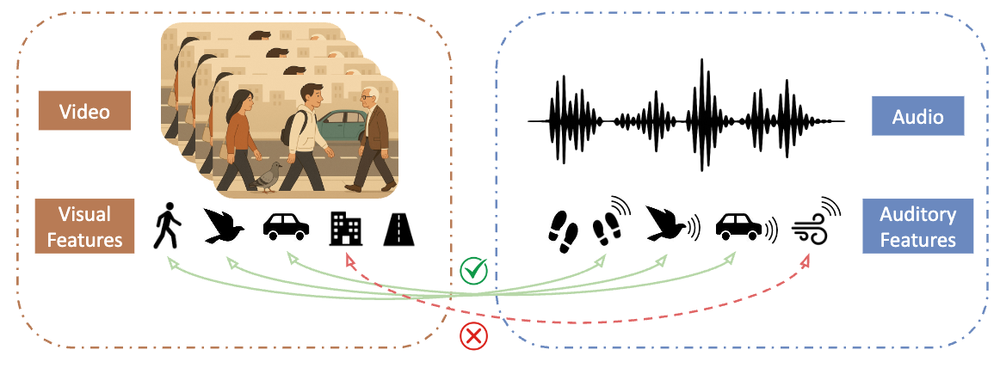
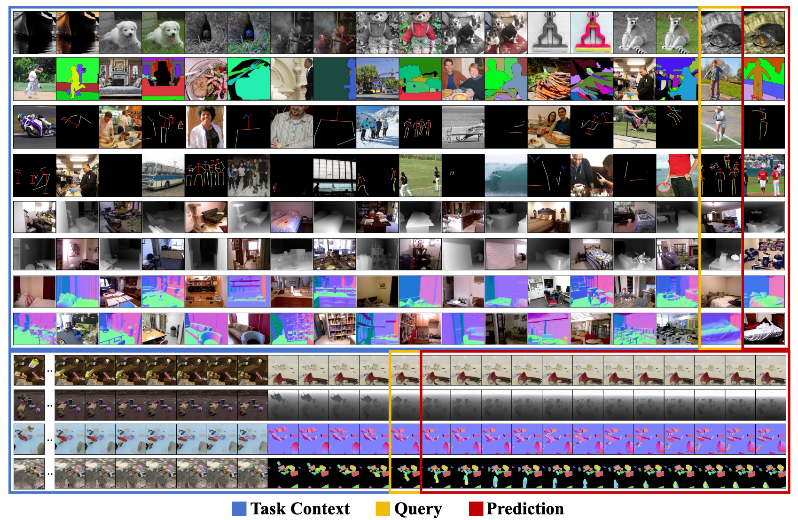
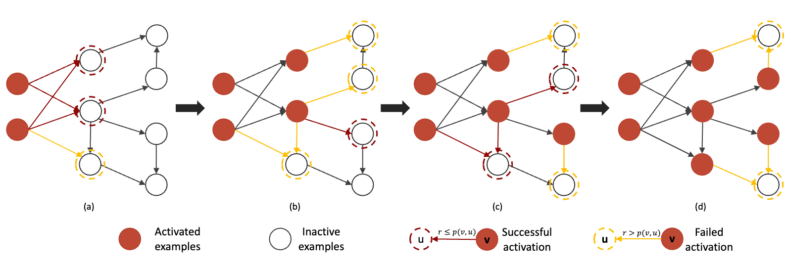
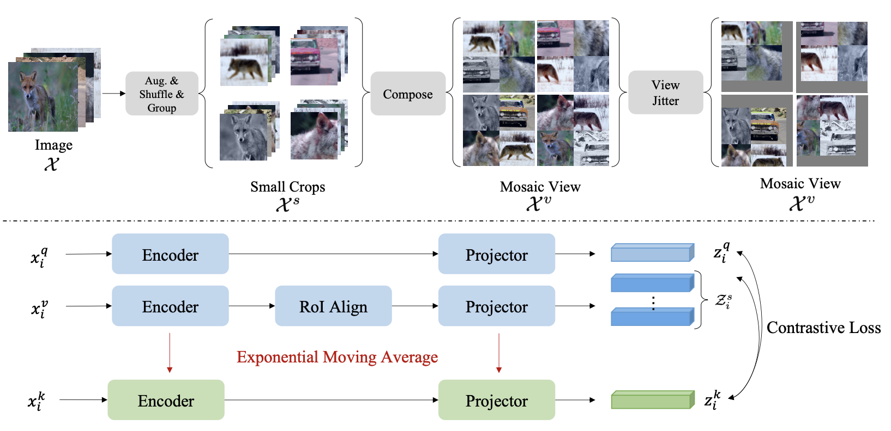
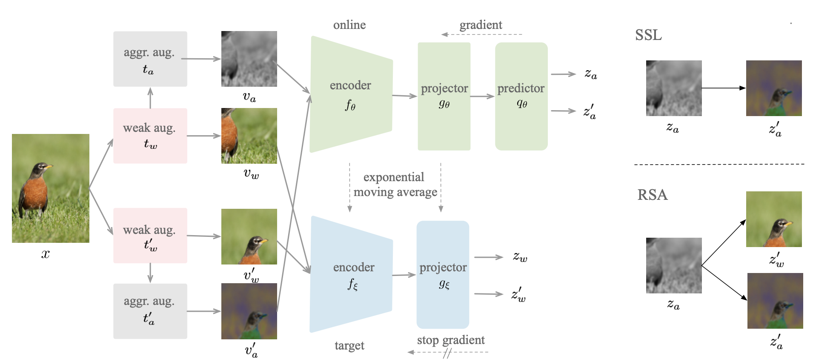
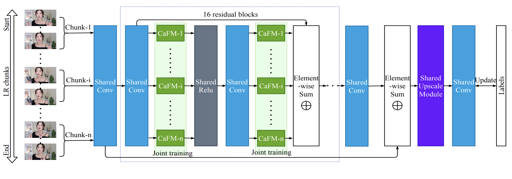
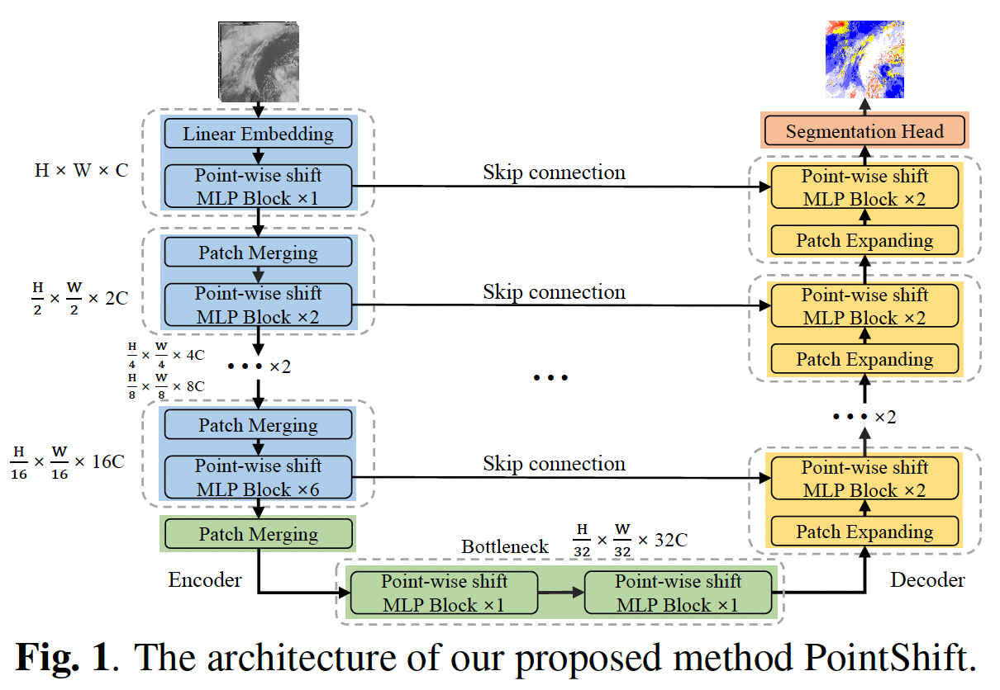
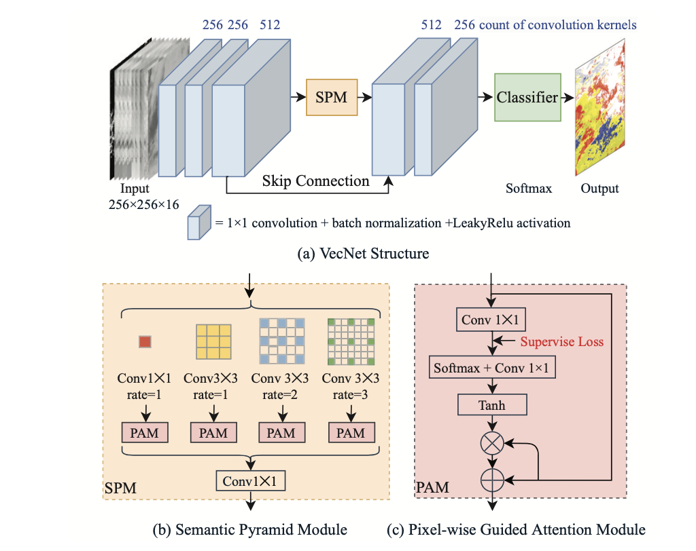

Zhaoqing Wang (王兆卿)
Ph.D. Candidate @ Sydney AI Centre (SAIC)
The University of Sydney
I am a third-year Ph.D. student at the Sydney AI Centre (SAIC), University of Sydney, advised by two brilliant supervisors, Prof. Tongliang Liu and Prof. Mingming Gong.
Concurrently, I am a Research Scientist at Pixverse, where I focus on large-scale pretraining and supervised finetuning of Video Generative Models.
Before that, I was a research intern at Microsoft Research Asia (supervised by Wenlei Shi), OPPO Research Institute (supervised by Yandong Guo), Kuaishou Y-Tech (supervised by Qiang Li) and IDL of Baidu Research (supervised by Guodong Guo).
My research currently focuses on Multi-modal Understanding and Generation. Previously, I worked on Visual Representation Learning and Visual Perception.
News
- 2025.08 One paper (Aligning What Matters) accepted to NeurIPS 2025.
- 2025.02 One paper (LaVin-DiT) accepted to CVPR 2025.
- 2024.03 I started research scientist at PixVerse.
- 2024.01 One paper (IDEAL) accepted to ICLR 2024.
- 2023.05 I started internship at Microsoft Research Asia.
- 2023.03 One paper (BEV-SAN) accepted to CVPR 2023.
- 2023.02 One paper (MosRep) accepted to ICLR 2023 (Spotlight).
- 2022.08 One paper (RSA) accepted to NeurIPS 2022.
- 2022.04 One paper (PointShift) accepted to IGARSS 2022 (Oral).
- 2022.02 Two papers (CRIS, SetSim) accepted to CVPR 2022.
- 2021.09 I started internship at OPPO Research Institute.
- 2021.06 One paper (CaFM) accepted to ICCV 2021.
- 2021.03 One paper (VecNet) accepted to IGARSS 2021.
- 2021.02 I started internship at Kuaishou Y-Tech.
- 2020.01 I started internship at IDL of Baidu Research.
Selected Publications


IDEAL: Influence-driven Selective Annotations Empower In-context Learners in Large Language Models
ICLR 2024



RSA: Reducing Semantic Shift from Aggressive Augmentations for Self-supervised Learning
NeurIPS 2022



Overfitting the Data: Compact Neural Video Delivery via Content-aware Feature Modulation
ICCV 2021


Vecnet: A Spectral and Multi-Scale Spatial Fusion Deep Network for Pixel-Level Cloud Type Classification
IGARSS 2021
Mentoring & Professional Activities
Reviewer Service
CVPR, ICCV, ECCV, ICLR, NeurIPS, ICML, AAAI, IGARSS, ICPR, ACM Computing Surveys, T-PAMI, PR